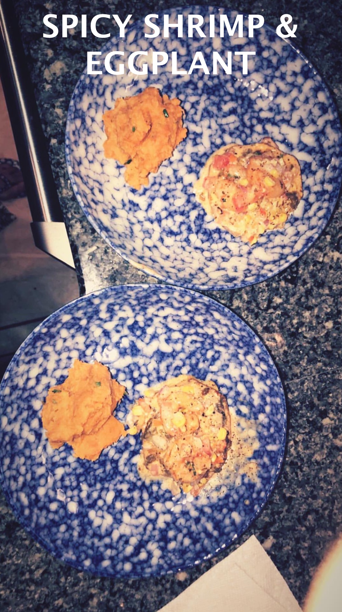

Spicy Shrimp and Eggplant
Serves 4

As you add each ingrediant, click the bullet to make it go away!
- 1 Eggpant
- 24 medium-sized uncooked shrimp
- 1/2 Cup Cream
- Salt
- Pepper
- Onion Powder
- Garlic Powder
- Oregano
- Olive Oil
- Crushed Garlic
- Corn
- Tomato
- Hot Pepper
- Cilantro
- Onion
DIRECTIONS
As you finish each step, click the bullet to make it go away!
- Take an eggplant and wash it thoroughly.
- Put the eggplant on a cutting board and cut slices about 2 cm wide.
- Season the eggplant with salt, pepper, onion powder, garlic powder, and oregano.
- Put the eggplant in a saucepan and cook on each side on the slice for about 3 minutes each on high heat.
- Put the eggplant slices on a cooking sheet
- In another saucepan, add in olive oil and garlic on high heat.
- Season the shrimp and throw in the saucepan with the garlic and olive oil.
- Use tongs to remove the shrimp. And put the shrimp in a separate bowl.
- Add heavy cream and butter to the saucepan. Season the sauce and mix on medium heat.
- Put sauce pan on the back burner and turn the stove on low.
- Chop the corn, onions, tomato, cilantro, and hot peppers and put them into a mixing bowl.
- Add salt and pepper to the mixing bowl and stir.
- Put the veggie mix on top of each eggplant slice
- Place the shrimp on top of the eggplant slices (about 3 shrimp per slice).
- Pour (or drizzle) the sauce on the eggplant.
- Put the oven on 400 and bake the eggplant for about 7 minutes.
- Bon Appétit!
Eggplant Sauce
Finished Product